Unidad 2: Lógica Digital - Lección 19
En la lección pasada conocimos a las "Fuerzas Especiales" de la lógica (NAND, NOR, XOR, XNOR) y descubrimos una nueva forma de pensar con el Producto de Sumas (POS). Pero en la industria tecnológica, la teoría matemática debe chocar con la realidad económica: a los ingenieros no les gusta comprar decenas de chips diferentes para un solo proyecto.
¿Qué pasaría si pudieras construir cualquier circuito del universo usando un solo tipo de "ladrillo"? Hoy descubrirás el verdadero superpoder de las compuertas NAND y NOR: su Universalidad.
Aprenderemos la técnica secreta para mutar una simple compuerta NAND o NOR en inversores, sumadores o multiplicadores. Te daremos la guía exacta para auditar sus señales paso a paso. ¡Son las navajas suizas digitales!
Tomaremos la ecuación matemática POS del Jurado que derivaste en la Lección 18 y la convertiremos en un circuito físico 100% hecho con compuertas NOR. Un hito de la optimización industrial.
En el laboratorio, un ingeniero eficiente no solo diseña circuitos que funcionan, sino que lo hace con la menor cantidad de componentes posible. Aquí es donde el puenteo de entradas se convierte en tu mejor aliado. Al unir físicamente las dos patas de entrada de una compuerta, estamos forzando a que \(A = B\).
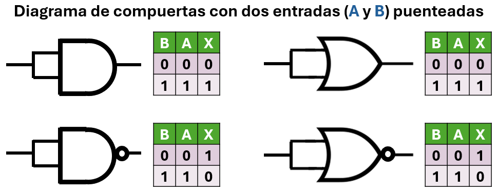
Fig. 1: El puenteo de entradas. Dependiendo de la compuerta, obtenemos un inversor, un buffer o un valor fijo.
NAND puenteada: \(F = \overline{A \cdot A} = \overline{A}\) → Inversor (NOT).
NOR puenteada: \(F = \overline{A + A} = \overline{A}\) → Inversor (NOT).
✔️ Aceptado universalmente. Ahorras un chip 7404 (inversor) usando una compuerta NAND o NOR sobrante.AND puenteada: \(F = A \cdot A = A\) → Buffer (seguidor).
OR puenteada: \(F = A + A = A\) → Buffer (seguidor).
⚠️ Técnicamente correcto, pero ineficiente: usas una compuerta compleja para hacer lo que hace un simple cable.Puentear las entradas de una XOR o una XNOR no genera una función útil para procesar señales variables. Al conectar ambas entradas a la misma señal \(A\), la salida se vuelve constante:
Puentear las dos patas (A y B al mismo cable) es la forma más rápida de aprender, pero tiene un costo técnico: le exige el doble de corriente ("Fan-out") a la compuerta anterior porque ahora debe alimentar dos pines a la vez.
Los ingenieros veteranos usan un truco más elegante basado en las Identidades de Boole que aprendiste en la Lección 14:
A al pin 1, y conecta el pin 2 directo a +5V (Vcc). Como \(A \cdot 1 = A\), la NAND lo invierte y sale \(\overline{A}\). ¡Lograste un NOT sin puentear!A al pin 2, y conecta el pin 3 directo a Tierra (GND). Como \(A + 0 = A\), la NOR lo invierte a \(\overline{A}\).Antes de cablear, recuerda el orden interno del 7400. Las compuertas de abajo tienen el orden normal (Entrada-Entrada-Salida), pero las de arriba están "invertidas" visualmente:
Alimentación: Vcc en Pin 14, GND en Pin 7.
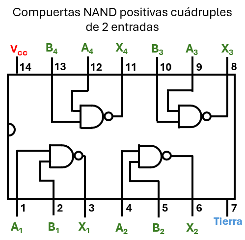
Fig. 2: Orden interno del 7400, con la muesca a la izquierda. Abajo está el pin 1. Arriba el 14.
El inversor es la compuerta más sencilla de construir con una NAND: basta con conectar las dos entradas de la compuerta a la misma señal \(A\). De esta forma, la salida será \(\overline{A \cdot A} = \overline{A}\), es decir, la negación de la entrada.
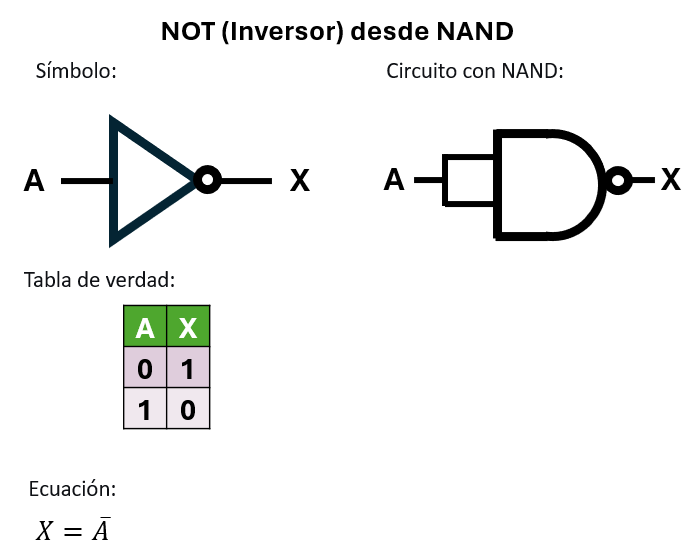
fig. 3: El inversor (NOT) es la base de todo: con solo puentear las entradas de una NAND, obtenemos la negación de la señal. La tabla de verdad confirma el comportamiento.
Conecta la entrada A a los pines 1 y 2. Salida (¬A) en el pin 3.
| A | \(\overline{A \cdot A}\) |
|---|---|
| 0 | 1 |
| 1 | 0 |
Para obtener la función AND (\(A \cdot B\)) a partir de NAND, primero se genera la NAND de las entradas: \(\overline{A \cdot B}\). Luego, esta señal se introduce en una segunda NAND con las entradas puenteadas (actuando como inversor), obteniendo \(\overline{\overline{A \cdot B}} = A \cdot B\). La doble negación se cancela.
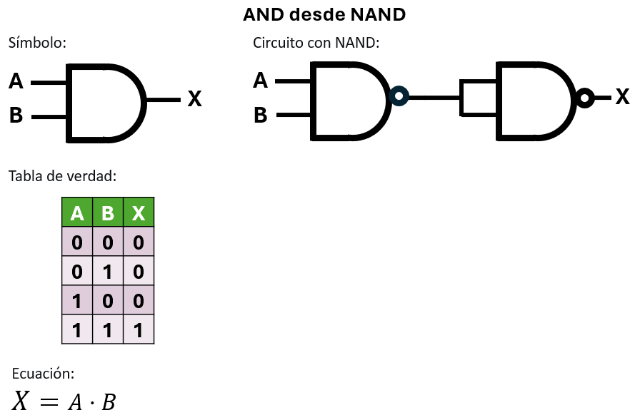
fig. 4: La compuerta AND restaurada. Al pasar la señal NAND por un inversor (nuestra NAND puenteada), la doble negación se cancela devolviéndonos la multiplicación original.
Entradas A, B a pines 1, 2. Une el pin 3 a los pines 4 y 5. Salida final en pin 6.
| B | A | \(P = \overline{A \cdot B}\) | \(X = \overline{P \cdot P} = A \cdot B\) |
|---|---|---|---|
| 0 | 0 | 1 | 0 |
| 0 | 1 | 1 | 0 |
| 1 | 0 | 1 | 0 |
| 1 | 1 | 0 | 1 |
La compuerta OR (\(A + B\)) se obtiene aplicando el teorema de De Morgan: \(A+B = \overline{\overline{A} \cdot \overline{B}}\). Primero se invierten A y B usando dos NAND como inversores (entradas puenteadas), y luego esas señales negadas se introducen en una tercera NAND.
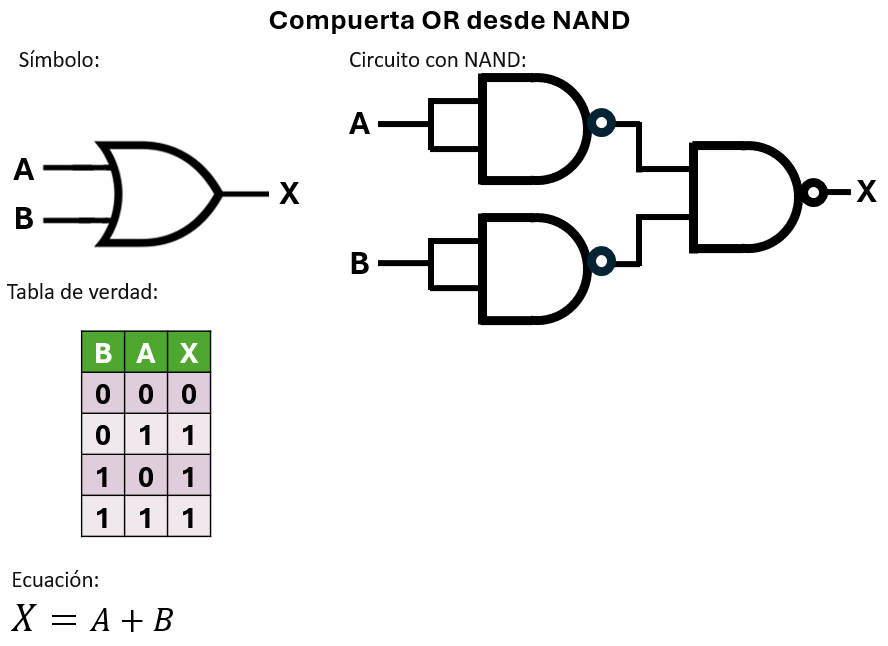
fig. 5: Aplicando las Leyes de De Morgan en el mundo físico. Al invertir las entradas A y B antes de combinarlas en la NAND final, la multiplicación se transforma mágicamente en una suma lógica (OR).
Inv A: Pines 1 y 2. Salida en 3.
Inv B: Pines 4 y 5. Salida en 6.
NAND Final: Pin 3 al 9, pin 6 al 10. Salida final en 8.
| B | A | \(\overline{A}\) | \(\overline{B}\) | \(X = \overline{\overline{A} \cdot \overline{B}} = A+B\) |
|---|---|---|---|---|
| 0 | 0 | 1 | 1 | 0 |
| 0 | 1 | 0 | 1 | 1 |
| 1 | 0 | 1 | 0 | 1 |
| 1 | 1 | 0 | 0 | 1 |
La NOR es la negación de la OR. Una forma sencilla de construirla es partir del circuito OR (tres NAND) y añadir un inversor a su salida (una cuarta NAND puenteada). La salida final será \(\overline{A+B}\).
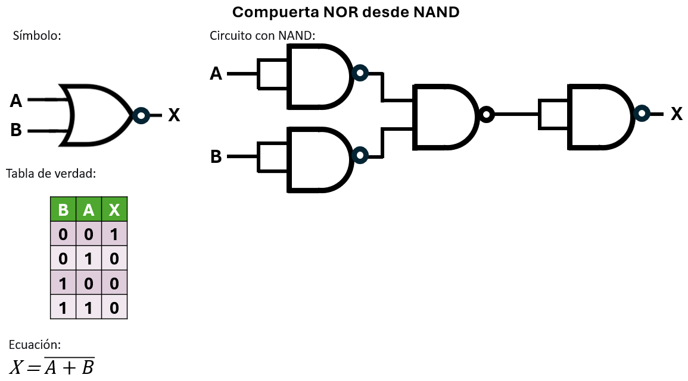
fig. 6: La compuerta NOR es simplemente una OR seguida de un inversor. Usamos 4 compuertas NAND en total, ¡aprovechando el chip 7400 al 100%!
Conecta la OR anterior. Su salida (pin 8) conéctala a los pines 12 y 13. Salida final en pin 11.
| B | A | \(\overline{A}\) | \(\overline{B}\) | \(P = \overline{\overline{A}\cdot\overline{B}}\) | \(X = \overline{P\cdot P} = \overline{A+B}\) |
|---|---|---|---|---|---|
| 0 | 0 | 1 | 1 | 0 | 1 |
| 0 | 1 | 0 | 1 | 1 | 0 |
| 1 | 0 | 1 | 0 | 1 | 0 |
| 1 | 1 | 0 | 0 | 1 | 0 |
El caso más trivial. Conectando las señales A y B directamente a las entradas de una única NAND, obtenemos la función \(\overline{A \cdot B}\).
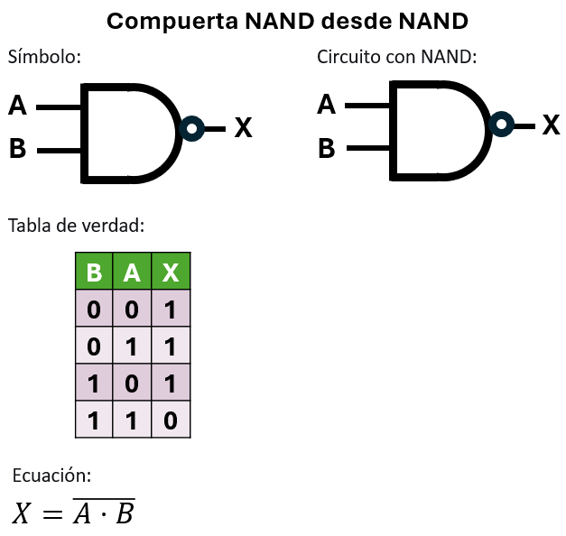
fig. 7: El caso más simple y directo. La compuerta NAND es ella misma, conectando las entradas directamente sin alteraciones.
Entradas A, B a pines 1, 2. Salida en el pin 3.
La XOR (\(A \oplus B\)) es estricta: requiere un diseño ingenioso. En lugar de construir una NOT+AND+OR, las señales se bifurcan en un diseño en forma de malla donde las salidas intermedias retroalimentan hacia adelante a otras compuertas.
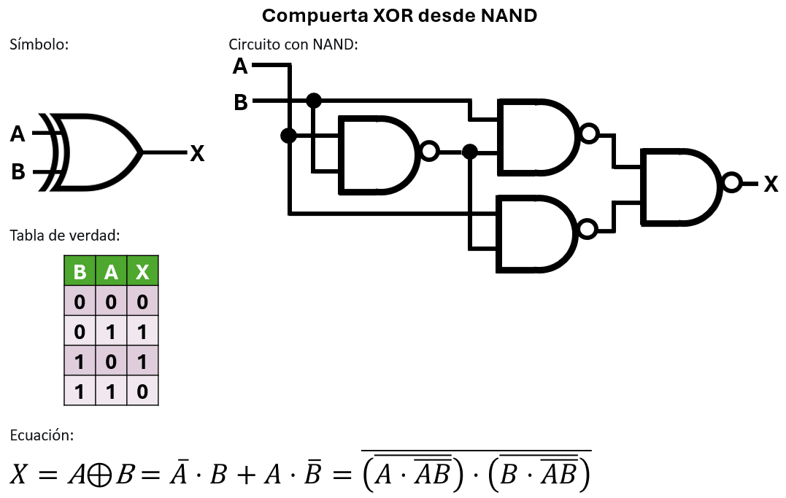
fig. 8: La XOR (A⊕B) requiere un diseño ingenioso en forma de malla. En lugar de conectar compuertas en línea recta (cascada), las señales de entrada y los resultados intermedios se bifurcan para alimentar múltiples compuertas simultáneamente.
| B | A | \(P = \overline{AB}\) | \(Q = \overline{AP}\) | \(R = \overline{BP}\) | \(X = \overline{QR} = A \oplus B\) |
|---|---|---|---|---|---|
| 0 | 0 | 1 | 1 | 1 | 0 |
| 0 | 1 | 1 | 0 | 1 | 1 |
| 1 | 0 | 1 | 1 | 0 | 1 |
| 1 | 1 | 0 | 1 | 1 | 0 |
La XNOR (igualdad) es el complemento de la XOR. Se construye añadiendo un inversor a la salida del circuito XOR de cuatro NAND.
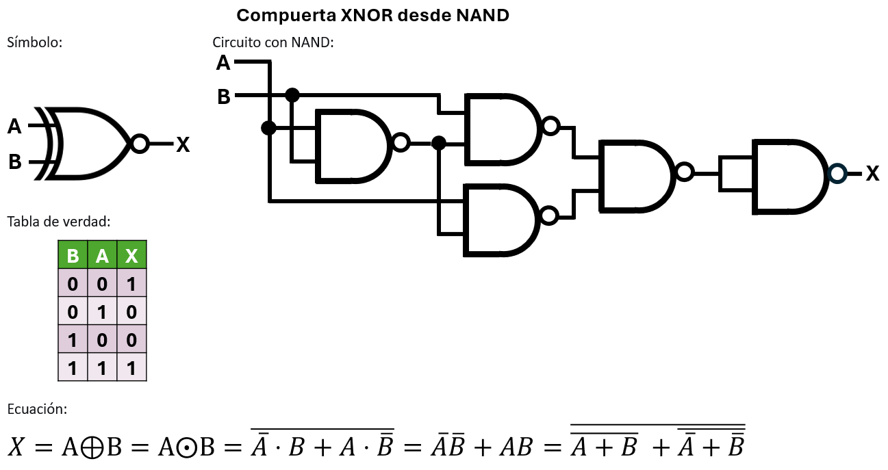
fig. 9: La compuerta XNOR (igualdad). Se requiere un segundo chip 7400 para añadir la quinta NAND, que actúa como inversor final de nuestro circuito XOR.
Conecta la salida de la XOR (pin 11) a las entradas de una quinta NAND (pines 1 y 2 de un SEGUNDO chip 7400). La salida final estará en el pin 3 de ese segundo chip.
En ingeniería no hay soluciones perfectas, solo intercambios (trade-offs). Acabamos de ver que podemos construir una compuerta XOR usando 4 compuertas NAND para ahorrar tipos de chips. Pero, ¿qué perdimos a cambio?
Velocidad.
Cruzar físicamente los transistores de una compuerta TTL toma unos 10 nanosegundos (10 ns). Esto se llama Retardo de Propagación.
Para encender un LED, un retraso de 30 nanosegundos es invisible al ojo humano. Pero en el procesador de tu computadora (que hace miles de millones de operaciones por segundo), ese retraso es la diferencia entre un equipo ultra rápido y uno que se congela. ¡El buen ingeniero sabe cuándo ahorrar chips y cuándo priorizar velocidad!
El chip 7402 tiene sus pines distribuidos al revés que el resto. La salida está antes que las entradas:
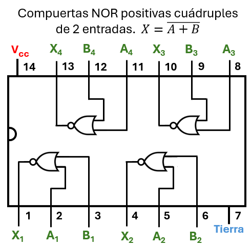
fig. 10: ¡Cuidado con el patillaje del 7402! A diferencia de otros chips básicos, sus salidas se ubican en los pines 1, 4, 10 y 13. Un error clásico de principiante es conectar asumiendo que el pin 3 es una salida.
Así como demostramos que la compuerta NAND es universal, la compuerta NOR tiene exactamente el mismo superpoder.
Al igual que la NAND, si puenteamos las dos entradas de una NOR (\(A\)), la operación es \(\overline{A + A}\), lo que resulta en \(\overline{A}\).
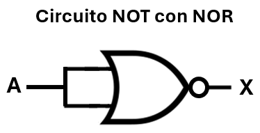
fig. 11: El inversor versión NOR. Al igual que con la NAND, puentear las entradas nos permite obtener la negación de la señal de forma inmediata.
Conecta la entrada A a los pines 2 y 3. Salida (¬A) en el pin 1.
| A | \(\overline{A + A}\) |
|---|---|
| 0 | 1 |
| 1 | 0 |
Como la NOR es "NOT-OR", si tomamos la salida de una NOR y la pasamos por un inversor (una segunda NOR puenteada), recuperamos la suma original: \(\overline{\overline{A+B}} = A+B\).
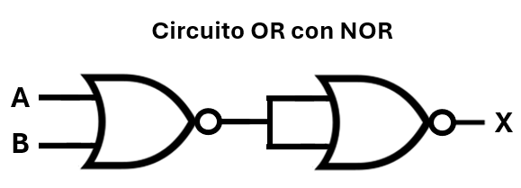
fig. 12: La compuerta OR restaurada. Como la NOR es una suma negada por naturaleza, pasarla por un inversor adicional nos devuelve la suma pura.
A al pin 2, B al pin 3. Salida (pin 1) a los pines 5 y 6. Salida final en pin 4.
| B | A | \(P = \overline{A + B}\) | \(X = \overline{P + P} = A+B\) |
|---|---|---|---|
| 0 | 0 | 1 | 0 |
| 0 | 1 | 0 | 1 |
| 1 | 0 | 0 | 1 |
| 1 | 1 | 0 | 1 |
Por De Morgan: \(A \cdot B = \overline{\overline{A} + \overline{B}}\). Invertimos cada entrada primero (dos NOR puenteadas) y luego aplicamos una tercera NOR combinadora.
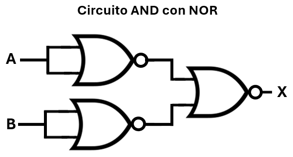
fig. 13: La simetría de De Morgan. Al invertir las entradas A y B antes de pasarlas por la NOR combinadora, la suma se transforma en una multiplicación lógica (AND).
Inv A: Pines 2 y 3. Salida en 1.
Inv B: Pines 5 y 6. Salida en 4.
NOR Final: Pin 1 al 8, pin 4 al 9. Salida en 10.
| B | A | \(\overline{A}\) | \(\overline{B}\) | \(\overline{A} + \overline{B}\) | \(X = \overline{\overline{A} + \overline{B}} = A \cdot B\) |
|---|---|---|---|---|---|
| 0 | 0 | 1 | 1 | 1 | 0 |
| 0 | 1 | 0 | 1 | 1 | 0 |
| 1 | 0 | 1 | 0 | 1 | 0 |
| 1 | 1 | 0 | 0 | 0 | 1 |
Utilizando la implementación de AND que ya construimos (tres NOR) y añadiendo un inversor a la salida (una cuarta NOR puenteada), obtenemos NAND: \(\overline{A \cdot B}\).
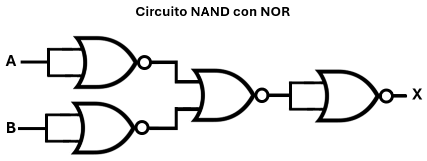
fig. 14: La compuerta NAND construida con NORs. Requiere 4 compuertas en total, demostrando que la NOR es igual de universal y poderosa que su hermana.
Conecta el AND anterior. Su salida (pin 10) conéctala a los pines 11 y 12. Salida final en pin 13.
| B | A | \(\overline{A}\) | \(\overline{B}\) | \(P = \overline{\overline{A} + \overline{B}}\) | \(X = \overline{P+P} = \overline{A \cdot B}\) |
|---|---|---|---|---|---|
| 0 | 0 | 1 | 1 | 0 | 1 |
| 0 | 1 | 0 | 1 | 0 | 1 |
| 1 | 0 | 1 | 0 | 0 | 1 |
| 1 | 1 | 0 | 0 | 1 | 0 |
Basta con usar la compuerta directamente. Conectamos A y B, y obtenemos \(\overline{A+B}\).
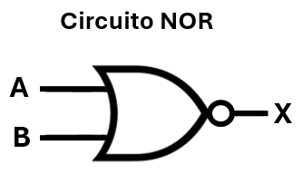
fig. 15: La compuerta NOR en su estado natural. Conectamos las entradas directamente para obtener la suma negada.
Conecta A al pin 2 y B al pin 3. Tu salida (¬(A+B)) estará en el pin 1.
Curiosamente, construir la XNOR (igualdad) con NOR es más directo que construir la XOR. Utiliza una malla de 4 compuertas NOR cuyas señales se bifurcan hacia adelante.
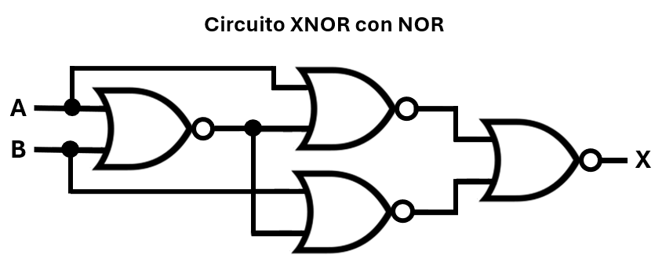
Fig. 16: Curiosamente, la XNOR (igualdad) es más "natural" para la familia NOR, lográndose con 4 compuertas cuyas señales se bifurcan y entrelazan de manera análoga a como la NAND crea la XOR.
| B | A | \(P = \overline{A+B}\) | \(Q = \overline{A+P}\) | \(R = \overline{B+P}\) | \(X = \overline{Q+R}\) (XNOR) |
|---|---|---|---|---|---|
| 0 | 0 | 1 | 0 | 0 | 1 |
| 0 | 1 | 0 | 1 | 0 | 0 |
| 1 | 0 | 0 | 0 | 1 | 0 |
| 1 | 1 | 0 | 0 | 0 | 1 |
Para obtener la XOR, primero construimos la malla XNOR (4 compuertas), y luego añadimos un inversor (una 5ta NOR) a la salida.
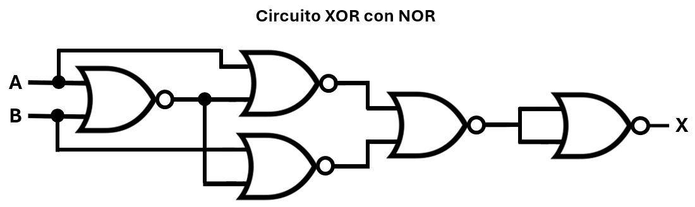
fig. 17: La compuerta XOR construida con la familia NOR. Requiere añadir un inversor (una quinta compuerta NOR) a la salida de nuestra malla XNOR.
Cablea el circuito XNOR (paso anterior). Conecta la salida (pin 13) a los pines 2 y 3 de un SEGUNDO chip 7402. La salida final (XOR) estará en el pin 1 del segundo chip.
En la Lección 18, obtuvimos la expresión para el problema de los tres jueces en forma Producto de Sumas (POS) a partir de los ceros de la tabla de verdad.
Recordemos la notación formal (Productoria de maxterms) que indica las filas donde la propuesta es rechazada ($P=0$):
Al traducir cada número de fila a su respectivo término de suma (donde los ceros se escriben normales y los unos se niegan), obtenemos la ecuación canónica:
Tras simplificarla agrupadamente (usando álgebra de Boole o un Mapa de Karnaugh de ceros), llegamos a nuestra elegante ecuación mínima POS:
Ahora implementaremos esta función utilizando únicamente compuertas NOR de dos entradas, aprovechando las leyes de De Morgan y la versatilidad del chip 7402.
SAnaliza bien esa última ecuación. Si defines:
La ecuación completa se convierte en: $$P = \overline{U + V + W}$$
Matemáticamente es hermoso: necesitamos una sola compuerta NOR gigante de 3 entradas (\(P = \overline{U + V + W}\)). Pero en la vida real, el chip 7402 solo tiene compuertas de 2 entradas. ¡Debemos dividirlas!
⚠️ La Trampa: Con la compuerta OR (Lección 17) podías hacer una cascada directa: (U + V) + W. Pero con la NOR NO PUEDES. Si conectas una NOR directo a otra NOR, la matemática se rompe por culpa de la doble negación.
✅ La Solución: Debemos hacer la NOR de U y V, invertir ese resultado para recuperar la suma original (U+V), y finalmente pasarlo por la última NOR junto con W.
$$ P = \text{NOR}\!\left( \overline{\text{NOR}(U,V)},\; W \right) $$
Por culpa de ese inversor intermedio, necesitaremos 6 compuertas NOR en total (lo que nos obliga a usar dos chips 7402).
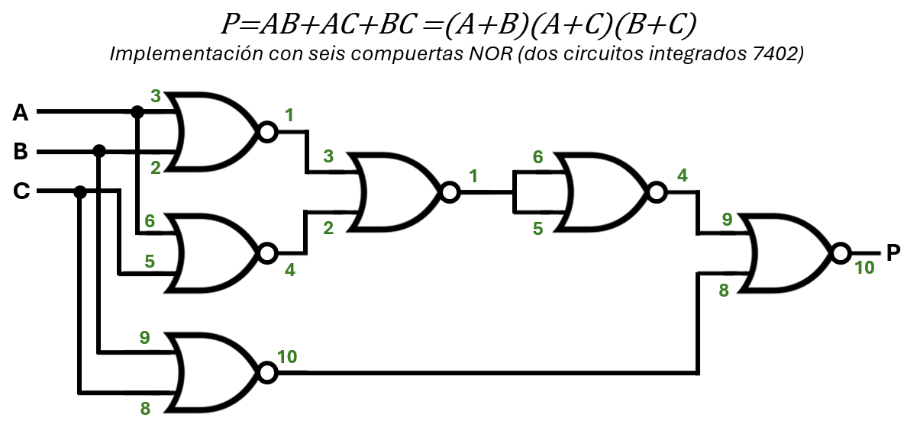
Fig. 18: Implementación con seis compuertas NOR (dos chips 7402). Una obra maestra de optimización de un solo tipo de componente. ¡El triunfo del ladrillo universal!
Llamaremos Chip 1 (U1) al primero y Chip 2 (U2) al segundo. Ambos deben tener Vcc (pin 14) y GND (pin 7). (Nota: A = Interruptor 1, B = Interruptor 2, C = Interruptor 3).
📊 Auditoría Lógica (Paso a Paso):
🔍 Cómo leer esta tabla: Las primeras 3 columnas son los Jueces (Entradas del DIP Switch). Las siguientes 3 columnas son las salidas del Chip 1 (U1). Las últimas 3 columnas muestran cómo el Chip 2 (U2) procesa la información hasta llegar al Veredicto Final (\(P\)).
📱 Nota de navegación: Si la tabla no cabe completa en tu pantalla, desliza hacia la derecha (o usa la barra de desplazamiento en la parte inferior) para ver el resto de las columnas.
| LOS 3 JUECES | CHIP 1 (U1) | CHIP 2 (U2) | ||||||
|---|---|---|---|---|---|---|---|---|
| C (Int. 3) | B (Int. 2) | A (Int. 1) |
\(U=\overline{A+B}\) | \(V=\overline{A+C}\) | \(W=\overline{B+C}\) | \(X=\overline{U+V}\) | \(Y=\overline{X}\) | \(P=\overline{Y+W}\) |
| 0 | 0 | 0 | 1 | 1 | 1 | 0 | 1 | 0 |
| 0 | 0 | 1 | 0 | 0 | 1 | 1 | 0 | 0 |
| 0 | 1 | 0 | 0 | 1 | 0 | 0 | 1 | 0 |
| 0 | 1 | 1 | 0 | 0 | 0 | 1 | 0 | 1 |
| 1 | 0 | 0 | 1 | 0 | 0 | 0 | 1 | 0 |
| 1 | 0 | 1 | 0 | 0 | 0 | 1 | 0 | 1 |
| 1 | 1 | 0 | 0 | 0 | 0 | 1 | 0 | 1 |
| 1 | 1 | 1 | 0 | 0 | 0 | 1 | 0 | 1 |
¡El Jurado funciona! \(P = 1\) únicamente cuando hay mayoría de jueces (dos o más en 1).
En el montaje físico del circuito del jurado estás utilizando dos chips 7402, cada uno con cuatro compuertas NOR. Nuestro diseño requiere seis compuertas, por lo que quedarán dos compuertas totalmente sin usar (una en cada chip).
Si dejas las entradas de esas compuertas al aire (flotantes), se comportarán como pequeñas antenas captando ruido electromagnético del ambiente (la red eléctrica, móviles, incluso la estática de tu mano). Ese ruido hace que el chip consuma corriente extra, se caliente y, lo peor, puede interferir con las compuertas vecinas dentro del mismo chip provocando fallos aleatorios.
Nunca dejes entradas lógicas sin conectar. Deben fijarse a un nivel estable (0V o 5V).
Para compuertas NOR (como el 7402) o NAND (7400), la práctica más rápida y segura es:
💡 Nota sobre Simuladores: En programas como Tinkercad este problema rara vez aparece, porque el software modela las entradas flotantes como ceros perfectos para evitar errores de simulación. Pero en un circuito de silicio real... ¡los fantasmas eléctricos existen! Adquiere el hábito de "aterrizar" las patas sueltas y te ahorrarás horas de frustración en el laboratorio.
En el montaje físico del circuito del jurado estás utilizando dos chips 7402, cada uno con cuatro compuertas NOR. Nuestro diseño requiere seis compuertas, por lo que quedarán dos compuertas totalmente sin usar (una en cada chip).
En la Lección 10 aprendimos sobre el peligro de los cables "al aire". Si dejas las entradas de esas compuertas flotantes, se comportarán como pequeñas antenas captando ruido electromagnético. Ese ruido hace que el chip consuma corriente extra, se caliente y, lo peor, puede interferir con las compuertas vecinas dentro del mismo chip provocando fallos aleatorios.
Nunca dejes entradas lógicas sin conectar. Deben fijarse a un nivel estable (GND o Vcc).
¡ADVERTENCIA CRÍTICA! Jamás conectes los pines de SALIDA a GND o Vcc. Si la salida intenta dar 5V y está conectada a GND, crearás un cortocircuito interno y quemarás el chip al instante.
La regla general es conectar las entradas sobrantes a un estado que no altere el consumo del chip ni lo haga oscilar. Aquí tienes la guía definitiva de la industria:
Lo habitual es conectar ambas entradas no usadas a Vcc (+5V) (preferiblemente a través de una resistencia pull-up común, o directamente si es seguro). Esto garantiza que la salida de la AND sea 1, y la de la NAND sea 0, dejándolas en un estado estable que no afecta al resto del chip.
Se conectan ambas entradas a GND (Tierra). Esto garantiza que la salida de la OR sea 0, y la de la NOR sea 1, manteniéndolas "dormidas" y sin consumir energía extra.
También se recomienda conectarlas a niveles fijos. Si conectas una a 1 y otra a 0, la salida será 1. Lo más simple y limpio es conectar ambas entradas a GND, forzando una salida 0 estable.
En cualquier circuito digital, las entradas flotantes son enemigas de la estabilidad. Dedica un momento al final de cada montaje para revisar qué pines de los chips quedan sin conectar y llévalos a un nivel lógico fijo (generalmente tierra para NOR/OR/XOR, y alimentación para AND/NAND). Esta pequeña práctica evitará fallos intermitentes y te ahorrará horas de depuración (troubleshooting).
💡 Nota sobre Simuladores: En programas como Tinkercad este problema no aparece, porque el software "asume" que las entradas flotantes son ceros para no colapsar. Pero en un circuito de silicio real... ¡los fantasmas eléctricos existen!
Acabas de auditar con éxito un sistema de votación complejo utilizando únicamente compuertas NOR. Pero, como buen ingeniero, es momento de evaluar si este esfuerzo matemático valió la pena.
En la Lección 17 resolviste este mismo problema usando el método SOP directo. Ahora compáralo con la versión POS Universal de hoy. ¿Qué ganamos y qué perdimos al rediseñar el circuito?
| Diseño | Compuertas Usadas |
Chips Requeridos |
Modelos en Inventario |
|---|---|---|---|
|
SOP (AND/OR) Lección 17 |
5 |
2 chips (un 7408 y un 7432) |
2 modelos distintos |
|
POS (NOR) Lección 19 |
6 |
2 chips (dos 7402) |
1 solo modelo |
Acabas de demostrar que un sistema de votación complejo puede ser construido con un solo modelo de chip (el 7402). Esto es exactamente lo que hace la industria: en lugar de fabricar procesadores mezclando miles de compuertas diferentes, los ingenieros diseñan "mares de compuertas NAND o NOR" idénticas a nivel microscópico, y simplemente las interconectan. ¡Esa es la base de los microchips y procesadores modernos!
Hemos demostrado que matemáticamente y lógicamente, NAND y NOR son gemelas: ambas pueden construir el universo entero. Sin embargo, si miras las especificaciones de tu smartphone o de una memoria USB, verás que todas usan memoria NAND Flash y casi nunca NOR.
¿Por qué la industria eligió NAND como el rey indiscutible?
La respuesta está en la física de los transistores (que está más alla del alcance de este curso):
En el mundo real, la geometría del silicio importa tanto como la matemática de Boole.
Dos docentes discuten por qué la "Universalidad" de NAND y NOR revolucionó la fabricación de microchips. Exploran cómo explicar el concepto de "puenteo" a estudiantes de grado 10° sin confundirlos, desglosan el rediseño del problema del jurado usando solo compuertas NOR, y analizan cómo usar De Morgan para saltar de la teoría (POS) a la implementación física.
Responde estas preguntas para asegurarte de que dominas los conceptos técnicos y estás listo para enseñarlos en tu futura aula:
Explicación técnica: El puenteo consiste en conectar la misma señal (A) a todas las entradas de una compuerta. En NAND y NOR, esto obliga a la compuerta a ejecutar \( \overline{A \cdot A} \) o \( \overline{A + A} \), lo que resulta en \( \overline{A} \) (un Inversor/NOT útil). Sin embargo, en XOR (\(A \oplus A\)) y XNOR (\(A \odot A\)), las salidas se vuelven constantes (0 y 1 respectivamente). Usar un chip lógico complejo solo para obtener un cero o un uno constante es un desperdicio de recursos.
Explicación técnica: Construir todo con un solo tipo de compuerta simplifica enormemente la fabricación (litografía) de los microchips, ya que solo se debe replicar un único patrón de transistores millones de veces ("mar de compuertas"). Además, reduce la variedad de chips necesarios en inventario, bajando los costos y minimizando el espacio desperdiciado en los circuitos impresos (PCB).
Explicación técnica: Esto es posible gracias a la Ley de De Morgan. La expresión de la OR es \(A + B\). Por doble negación, esto es \( \overline{\overline{A + B}} \). Aplicando De Morgan en la negación interna, obtenemos \( \overline{\overline{A} \cdot \overline{B}} \).
Físicamente esto significa:
1. Invertir A usando una NAND puenteada.
2. Invertir B usando otra NAND puenteada.
3. Pasar ambos resultados por una tercera NAND. Total: 3 NANDs.
Responde en tu cuaderno físico las siguientes preguntas de reflexión docente:
¡La teoría está lista y auditada! Tienes en tu cabeza y en tus tablas de verdad los planos maestros para construir cualquier circuito del universo usando un solo tipo de "ladrillo Lego".
Pero un ingeniero no se gradúa leyendo diagramas de pines; se gradúa pelando cables y rastreando señales. En la próxima lección (Laboratorio 2), nos pondremos la bata de trabajo. Construiremos paso a paso el famoso circuito de la "escalera mecánica" (XOR) usando únicamente un chip NAND (74HC00), y usarás una Punta Lógica para cazar errores en tiempo real.
Además, al finalizar el montaje, te revelaremos el secreto mejor guardado de la Unidad 2: cómo ese circuito de luces esconde en su interior el corazón matemático de una calculadora. ¡Prepara tu protoboard para el gran cierre!